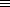
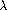
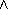

排版 Scheme
14.1 \scm
用 \scm 把 Scheme 程序括起来就可以进行显示了，并且含
有语法加亮信息。你只要试用 css.t2p 里提供的 CSS 样式就可以得
到很漂亮的 Scheme 语法加亮。比如：
\scm{
(define fact
"The factorial function"
(lambda (n)
(if (= n 0) 1 ;the base case
(* n (fact (- n 1))))))
}
结果是：
(define fact "The factorial function" (lambda (n) (if (= n 0) 1 ;the base case (* n (fact (- n 1))))))
14.2 Scheme 的样式
有了语法加亮的信息还不能把各种关键字用不同的颜色显示。
你必须在 CSS 文件里定义样式，或者把这些样式使用
\cssblock ...\endcssblock 的形式 嵌入 HTML 中。
比如：
\cssblock
.scheme {color: brown} /* background punctuation */
.scheme .keyword {color: #990000; font-weight: bold}
.scheme .builtin {color: #990000}
.scheme .variable {color: navy}
.scheme .global {color: purple}
.scheme .selfeval {color: green}
.scheme .comment {color: teal}
\endcssblock
就可以对 Scheme 语句的各种关键字，变量等进行语法加亮了。
14.3 定义关键字
你可以使用
\scmbuiltin{cons car cdr}
这样的形式定义内部函数。
\scmkeyword{define-class unwind-protect}
这样的形式定义关键字。
使用
\scmvariable{and 42 +i}
的形式定义变量。这样它们就能被加上特殊的颜色了。
14.4 slatex
以上都是 tex2page 自己提供的排版 Scheme的方式。 对 Scheme 排版，最好使用 Slatex, 它可以在
http://www.ccs.neu.edu/home/dorai/slatex/slatxdoc.html
下载。
在装好 slatex 之后。只要
\usepackage{slatex}
就可以使用 slatex 提供的各种功能了。
14.4.1 schemedisplay 环境
使用 tex2page 提供的 \scm{...} 如果内容太长容易出错，所以用
\begin{schemedisplay}
...
\end{schemedisplay}
就好多了。
14.4.2 插入段落的 Scheme 语句
段落中的 Scheme 语句，比如 (cons 'a '(b c)), 可以这样输入：
\scheme|(cons 'a '(b c))|
14.4.3 插入 Scheme 程序文件
如果要读入一个 Scheme 程序文件就使用
\schemeinput{evenodd.scm}
% the .scm is optional!
上面介绍的这些这些基本够用了。如果你还不满足就继续看下一节。
14.4.4 \schemeresult
Scheme 解释器的输出结果可以用一种特殊的颜色显示：
\scheme|((lambda () (cons 'lambda 'cons)))| yields \schemeresult|(lambda . cons)|.
结果是：
((lambda () (cons 'lambda
'cons))) yields
(lambda . cons).
14.4.5 特殊符号
你想不想把 (lambda () (begin ...) 都用
( 来显示？ () (begin ...)
() (begin ...)
用
\setspecialsymbol{lambda}{$\lambda$}
就可以达到你的目的。我们还可以花哨一点：
\setspecialsymbol{lambda}{$\lambda$}
\setspecialsymbol{and}{$\land$}
\setspecialsymbol{equiv?}{$\equiv$}
\setspecialsymbol{below?}{$\subseteq$}
\setspecialsymbol{above?}{$\supseteq$}
\setspecialsymbol{a1}{$a_1$}
\setspecialsymbol{a2}{$a_2$}
\begin{schemedisplay}
(define equiv?
(lambda (a1 a2)
(and (below? a1 a2)
(above? a1 a2))))
\end{schemedisplay}
显示为：
(define  ( () ( (

) (

))))
14.4.6 定义关键字
\setkeyword \setconstant \setvariable \setdata
可以定义你自己需要的关键字，常数，变量，数据，它们会被正确的 语法加亮。比如，通常 cons 不是一个关键字，它一般显示为：
(cons 'a '(b c))
我们用了
\setkeyword{cons}
之后，cons 就用跟 define 一样的方式显示了：
(cons 'a '(b c))
14.4.7 \scmdribble
这个命令可以把 \scm 区域里的内容送到最近的一个
\verbwritefile 指定的文件里，同时把这些代码语法加亮在
文档中显示。
这可以被作为一种 Scheme “文学编程”的方式。我来试试：
\verbwritefile test1.scm
\scmdribble{
(define factorial
(lambda (n)
(if (= n 0)
;\scheme{(zero? n)}
;also possible
1 (* n (factorial
(- n 1))))))
}
嗯。还真是生成了一个文件叫做 test1.scm. 里面是这些代码。
(define factorial ((n) (if (= n 0) ;\scheme{(zero? n)} ;also possible 1 (* n (factorial (- n 1))))))